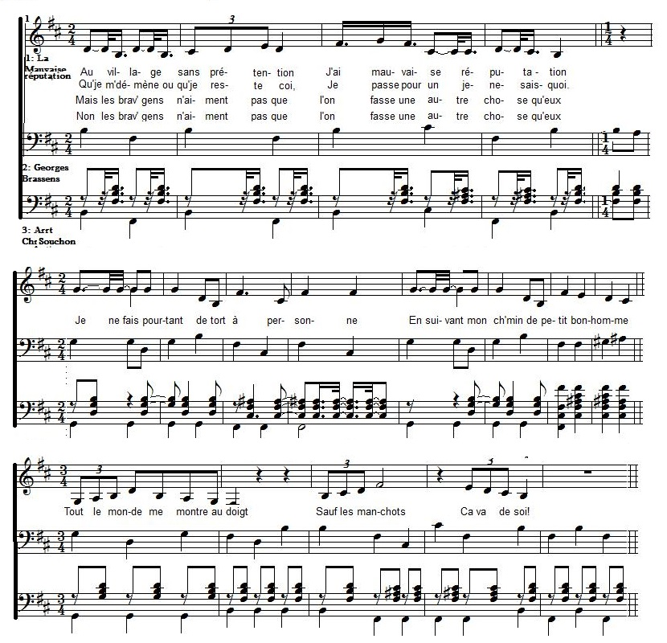

 Brassens chante "La Mauvaise réputation" |

Index
|
|
|
(1) Comme pour la plupart des chansons de Brassens sur ce site, ces notes sont tirées du blog de David Yendley (http://dbarf.blogspot.fr/2011/01/). La traduction chantable anglaise est basée sur sa traduction en prose. (2) "Brassens n'était pas un marginal, isolé et rejeté par la société... Ses amitiés étaient nombreuses et durables, mais sa tournure d'esprit le portait vers l'anarchisme et d'aucuns se souviennent l'avoir entendu dire "je me moque des lois". Il supportait difficilement le conformisme des bourgeois et leur morale rigide. Et il se plait à choquer son monde dans certaines de ses chansons. (3) Le thème du menu larcin touchait chez lui une corde sensible: Alors qu'il n'avait que 17 ans, Georges et ses copains décidèrent de se faire des sous en dérobant des objets à leurs propres familles. Lui-même chipa des bijoux à sa sur. La police arrêta toute la bande. Certains des parents n'hésitèrent pas à laisser leurs rejetons aller en prison. Le père Brassens récupéra immédiatement son fils au commissariat et prit sa défense. Mais Georges fut chassé de son collège et ses parents décidèrent de l'envoyer à Paris en février 1940 pour étouffer le scandale. Il habita chez la sur de sa mère, la tante Antoinette qui lui fit faire la connaissance de la fameuse Jeanne Planche dont on aura à reparler..." |
(1) Like for most of the Brassens songs at this site, these notes are borrowed from David Yendley's blog (http://dbarf.blogspot.fr/2012/05/alphabetical-list-of-my-brassens-songs.html). This singable translation is based on his prose translation. (2) "Brassens was not an outsider in the sense that he was rejected and alone... He had many long-lasting friends. His instincts were, however anarchistic and he is quoted as saying: "I am not very fond of the law." He was impatient of middle class values and stuffy sexual prudery, and often shocks - as will clearly be seen in other songs. (3) The theme of petty thieving touched a raw nerve with him. - When he was seventeen, Georges and some schoolmates decided to make money by stealing from their families. Georges stole items of jewellery from his sister. The police were alerted and apprehended the gang. Some of the parents felt little mercy for their sons and left them to serve prison sentences. Brassen's father immediately picked up his son from the commissariat to support him, but Brassens was expelled from school and his parents decided to send him to Paris in February 1940 to escape the scandal. He lived at the house of his mother's sister, Aunt Antoinette (and there he met Jeanne Planche who was to play a big part in his life...)". |

|
Brassens chante "La Mauvaise réputation" |